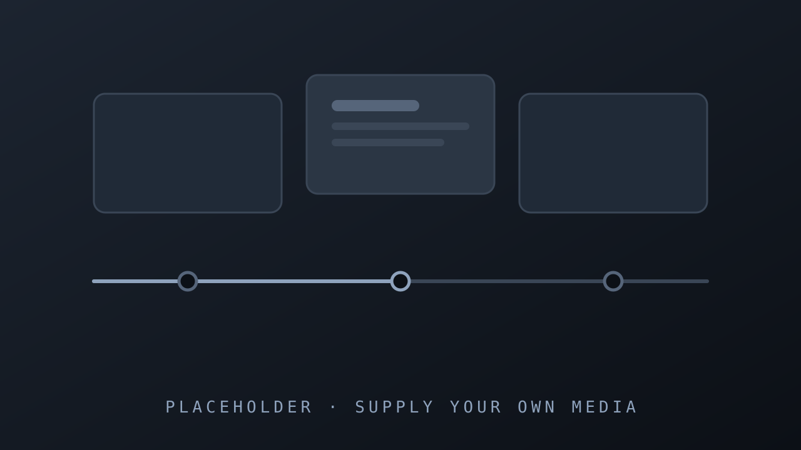

فيديوعربيكاملمنملف واحد
كل مشهد كود، وكل حركة على خط زمني واحد

النص يشرح الصورة
قاعدة الأولوية للصورة: المشاهد ترى شيئا في كل مشهد
تقرير الإنتاج

كل مرحلة إما تنجح أو توقف الإنتاج
المصدر: دليل العمل
8
قوالب جاهزة لبناء المشاهد
من الصورة الكاملة إلى المقارنة والرقم الكبير
قبل البوابات وبعدها
بدون فحص
شرائح مزدحمة بالنص وتصدير قبل أن يراجع أحد
مع البوابات
قصة بصرية مفحوصة قبل أن يبدأ التصدير
الخلاصة: لكل مرحلة فحص
من الفكرة إلى الفيديو بخطوات قابلة للفحص
مثال توضيحي

المصدر: دليل العمل في هذا المستودع